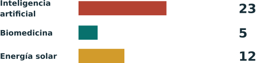

Las nuevas fronteras de la tecnología¶
Una guía visual del Anuncio 48 de China, los controles estadounidenses sobre IA y el futuro de los modelos abiertos chinos.

Edición de investigación: 2 de noviembre de 2026. Distinguimos las obligaciones actuales, las propuestas y nuestro análisis. El libro explica las fuentes; no autoriza operaciones concretas.
Dos países, distintas puertas¶
China: registro en vigor, catálogo en consulta. El anuncio del 16 de octubre abarca 40 tecnologías: 23 de IA, 5 de biomedicina y 12 de energía solar. Propone prohibir 14 y restringir 26. El registro previo para las transferencias cubiertas comenzó ese mismo día e incluye exportaciones iniciadas pero no terminadas. La consulta acaba el 15 de noviembre de 2026. CN48 CNQA
Estados Unidos: controles de chips vigentes y una situación compleja para los modelos. Los chips avanzados requieren comprobar permisos, destino, comprador y uso. Desde el 15 de enero de 2026, ciertas exportaciones desde Estados Unidos de chips como el H200 a China o Macao pueden recibir evaluación individual bajo condiciones. No es aprobación automática. La norma de difusión de IA sigue en el texto publicado, aunque BIS anunció que no la aplicaría. GAO cuestionó el procedimiento de esa política en mayo de 2026. US26 EAR742 USNE GAO26 EAR774
El hallazgo central¶
El anuncio no establece una prohibición general de los modelos abiertos chinos. El borrador excluye la tecnología de IA que ya es pública mediante código abierto o publicaciones académicas. Para nuevas exportaciones abiertas de tecnología restringida propone permisos automáticos u otras facilidades. Una exclusión y un trámite de permiso son cosas distintas; otras leyes pueden seguir siendo aplicables. CN48 CN-A1 CNQA
Ofrecemos capítulos, un atlas de 40 puntos y siete ediciones con PDF. Los anexos oficiales son archivos WPS; los PDF son copias convertidas localmente. El archivo local china_export_control.pdf contiene una presentación sobre organoides, ajena al anuncio, y no se usa como prueba.
Documentos oficiales¶
- 48 / 1 WPS original | PDF convertido
- 48 / 2 WPS original | PDF convertido